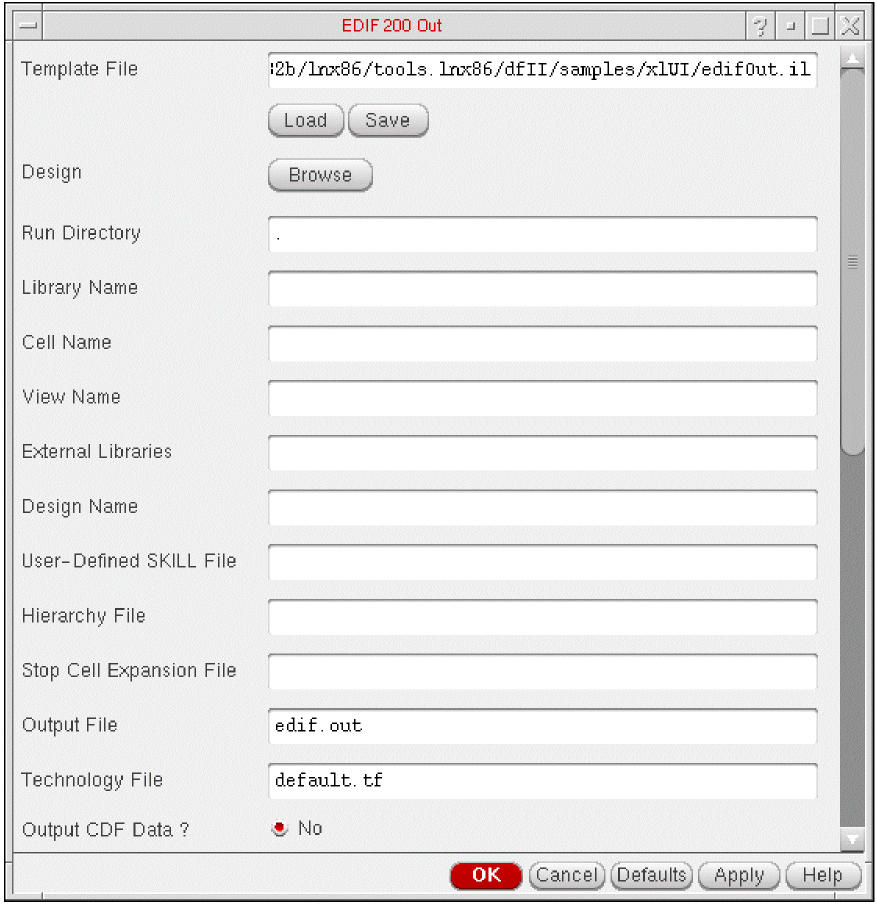
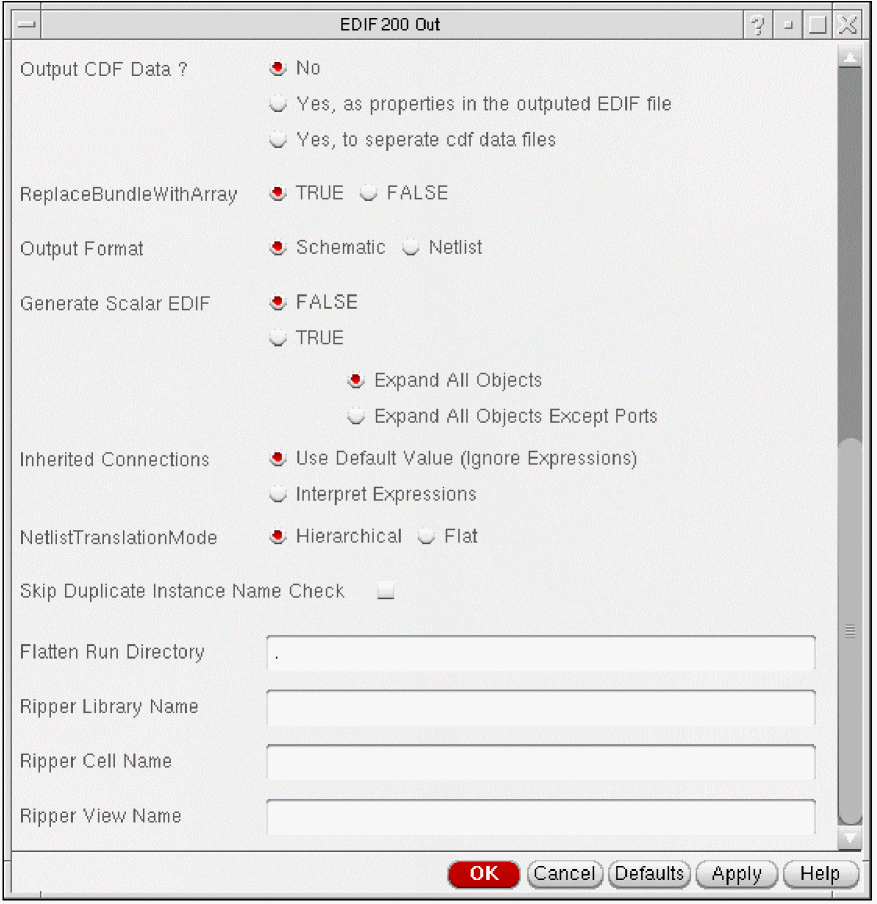

2
EDIF 200 Out
EDIF 200 Out translates design data files from the Cadence® Design Framework II (DFII) format into the EDIF 200 format.
- An overview of the EDIF 200 Out data translation process, see “Understanding EDIF”
- Procedures for starting and controlling an EDIF 200 Out translation, see “Using EDIF 200 Out”
- Explanations of how EDIF 200 Out translates different kinds of views, see “How EDIF 200 Out Translates Data”
- A sample EDIF 200 Out output file, see “EDIF 200 Out Output Files”
- A description of the EDIF 200 Out form fields, see “EDIF 200 Out Form Fields”
Understanding EDIF
The Electronic Design Interchange Format (EDIF) is a nonproprietary, standard interchange format that uses text to describe electronic design data. To express constructs that represent the electronic design, EDIF 200 uses a syntax similar to LISP, a list-processing programming language.
For more information about the EDIF 200 syntax and the functional and semantic descriptions of each EDIF 200 construct, see the Electronic Design Interchange Format Version 200, ANSI/EIA 548 manual.
EDIF 200 Out Overview
The Cadence EDIF 200 Out translator changes the format of design data from DFII into the EDIF 200 format.
EDIF 200 Limitations
You need to be aware of the following EDIF 200 limitations.
-
EDIF 200 does not include an equivalent to the DFII layer-purpose pairs.
You can use the Cadence SKILL language interface to force EDIF 200 Out to create multiple layer-purpose pairs in the EDIF 200 output file. EDIF 200 describes layers using thefigureGroupconstruct. You can also use the EDIF 200propertyconstruct, but thepropertyconstruct cannot define a layer with more than one purpose. (A layer with more than one purpose violates the EDIF 200 grammar rule stating that names defined in the same name scope must be unique.) -
You cannot describe donuts in EDIF 200.
Donuts are complex shapes that you construct as composite shapes. - The EDIF 200 standard does not include the concept of a net that is global to an arbitrary hierarchical depth.
- EDIF 200 does not support the following design styles:
- EDIF 200 Out cannot output the portRef to net construct when numInst exceeds 32767.
Example 1
This example shows inconsistent port grouping between the symbol view and the schematic view of a cell.
In the example, cell cpu has two interface ports: A<0:3> and B<0:3>. Port A<0:3> is grouped on the symbol of cell cpu. But on the schematic, port A<0:3> is divided into ports: A<0:1> and A<2:3>.
In most CAE systems, you establish connectivity by connection and by name, such that ports A<0:1> and A<2:3> are members of port A<0:3>. However, in EDIF 200, ports A<0:1> and A<2:3> cannot be represented because the interface (which defines ports) contains only A<0:3> and B<0:3>.
Example 2
This example shows replication of a tapped bit from a bus or bundle.
In the example, the bus slice is three bits wide. The first bit is A<0>, the second bit is A<1>, and the third bit is A<0>. This slice cannot be represented in EDIF 200 because it requires A<0> to be represented twice in the port list of a joined statement.
Using EDIF 200 Out
You can start and control EDIF 200 Out from either a UNIX prompt or the Command Interpreter Window (CIW).
Starting EDIF 200 Out from a UNIX Prompt
From a UNIX prompt, you reference a template file. The template file contains preset values for the EDIF 200 Out options that you want to apply during the translation process. Template files are described later in this section.
-
To reference a template file from a UNIX prompt, type the following:
edifout
where templateFile is the name of the specific template file.templateFile -
To reference a template file from a UNIX prompt and use a specific
cds.libfile, type the following:edifout
This command tells the software to use a particulartemplateFile-cdslibcdslibFilecds.libfile (named cdslibFile) instead of searching for thecds.libfile in the standard locations. For more information aboutcds.libfiles, see Cadence Library Path Editor User Guide.
Starting EDIF 200 Out from the CIW
From the CIW, you can access the EDIF 200 Out form to specify the options you want to apply to the current design translation.
To access the EDIF 200 Out form,
-
Choose File – Export – EDIF 200.
Before you try to translate a schematic, use the Design – Check and Save command from the schematic window to ensure connectivity. For more information, see Virtuoso Schematic Editor User Guide.The EDIF 200 Out form appears (top half).
The EDIF Out form (bottom half).
Thecds.libfile replaces the library search path from earlier versions of EDIF 200 Out. Thecds.libfile identifies the locations of your reference libraries. For more information, see Cadence Library Path Editor User Guide. -
Type in the library, cell, and view names.
The cell and view names are optional. However, if you enter only a library name, the entire library is translated. - Specify any options you want to apply during translation.
-
Do one of the following:
- Click OK to close the EDIF 200 Out form and begin the translation process.
- Click Apply to keep the EDIF 200 Out form open and begin the translation process.
EDIF 200 Out creates a log file callededifout.login the run directory. When the translation is complete, an EDIF 200 file is created with the output filename you specified on the form. (You can specify a path as the output filename to create the output file in a directory other than the run directory.)
Creating a Template File
A template file is a text file that contains preset values for the options you want to apply during an EDIF 200 Out translation.
There are three ways to create a template file:
- Click Save on the EDIF 200 Out form to save the values you specified on the EDIF 200 Out form. The information is saved to the file you enter in the Template File field.
-
Use your local text editor to copy the sample template file to a new file and modify the new file as needed. The sample template file (
edifOut.il) is located in the your_install_dir/tools/dfII/samples/xlUIdirectory. - Use your local text editor to create a new template file, like the one shown in “Sample Template File”. The sample shows all the EDIF 200 Out variable names in the SKILL property list format.
Required Information
An EDIF 200 Out template file must include the name of the DFII library containing the top-level cellview.
Although the following entries are not required, they are recommended:
- Name of the cell that maps to the cellview to be translated
- Name of the view that maps to the cellview to be translated
All other fields and values are optional.
Sample Template File
The following sample shows a template file without most values. As described above, you can enter the values by editing a file or by saving the information you enter in the EDIF 200 Out form.
edifOutKeys = list( nil 'runDirectory "." 'library "" 'cell "" 'viewName "" 'externalLibList "" 'design "" 'ILFile "" 'hierarchyFile "" 'stopCellExpansionFile "" 'outputFile "edif.out" 'techFile "default.tf" 'outputCDFData "FALSE" 'replaceBundleWithArray "TRUE" 'netlistOption "TRUE" 'interpretInhConn "FALSE" 'scalarOption "FALSE" 'scalarWithPortsUnexpanded "FALSE" 'netlistMode "Hierarchical" 'skipDupInstNameCk "FALSE" 'flattenDir "" 'ripperLibraryName "" 'ripperCellName "" 'ripperViewName "" )
Mapping Form Fields to Template File Entries
The following table maps the EDIF 200 Out form fields to their template file entries. (Form field descriptions begin in “EDIF 200 Out Form Fields”.)
| EDIF 200 Out form field | EDIF 200 Out template file entry | Default value |
|---|---|---|
Creating a Hierarchy File
A hierarchy file specifies the expansion rules of hierarchy that EDIF 200 Out uses. You can use a text editor to create this file. Each line of the hierarchy file contains a symbol name followed by one or more cellview names that tell EDIF 200 Out the order in which to look for cellviews when expanding the hierarchy.
Hierarchy File Format
The format of the hierarchy file is as follows:
symbolViewName ViewRepName1 ViewRepName2
Sample EDIF 200 Out Hierarchy File
symbol schematic cmos_sch nmos_sch
symbolNeg schematic cmos_sch nmos_sch
abstract layout symbolic
In the sample hierarchy file, the first line tells EDIF 200 Out to first look for schematic, then cmos_sch, and then nmos_sch when expanding the hierarchy of symbol.
The second line tells EDIF 200 Out to first look for schematic, then cmos_sch, and then nmos_sch when expanding the hierarchy of symbolNeg.
The third line tells EDIF 200 Out to first look for layout and then for symbolic when expanding the hierarchy of abstract.
edifStop=on to a cellview of a symbol to stop EDIF 200 Out at that instance level in the hierarchy and to include only the symbol of that cellview in the EDIF output file. Another way to stop cell expansion is, for each cell where you want expansion to stop, list these cell names in a file. Then specify that file in the Stop Cell Expansion File option. For each cell name listed, EDIF 200 Out does not perform expansion at the instance level. For more information, see “Stop Cell Expansion File”How EDIF 200 Out Translates Data
Many objects in the DFII database correspond to constructs in the EDIF language. For example, in both EDIF and DFII, a cell can have many different views associated with it. The similarity between EDIF constructs and DFII objects makes it possible to map most EDIF constructs to DFII objects.
How EDIF 200 Out Translates Cells and Views
In the DFII database, a cell is a design object that can have a variety of views associated with it. Each view describes the cell from a different perspective. A view can be a schematic, a symbol, a mask layout, or a simulation model. The design process that is applied to a cell is dictated by the associated views.
The DFII cellview is the product of the mapping of cells and views in a library. There is a direct correspondence between the cell and cellview objects in the DFII environment and the cell and view constructs in the EDIF 200 language.
In the EDIF language, every view has an interface and a contents section. The cell interface section describes how the cell is viewed from outside the context of the cell. For example, the symbol construct, which is contained in the interface section of the cell, describes a symbol for a cell. The cell interface section also contains the cell ports. The contents section describes the view of the cell from within the context of the cell.
The DFII database separates the symbol definition from the internal definitions of a cell. The EDIF description of an indexed schematic, however, has a full interface and contents section in the resulting EDIF description.
The following table shows how EDIF 200 Out maps DFII view types to EDIF view types.
How EDIF 200 Out Translates Constructs
| DFII View Type | EDIF 200 View Type |
|---|---|
|
MASKLAYOUT1 |
|
|
NETLIST2 |
|
The following table shows how EDIF 200 Out maps DFII objects to EDIF 200 Out constructs.
| DFII Object | EDIF 200 Construct |
|---|---|
How EDIF 200 Out Translates Connectivity
The DFII connectivity model is a subset of the EDIF connectivity model. EDIF 200 Out translates terminals to ports, pins to portImplementations, and arrayed nets to netBundles or net arrays.
When creating a netlist view of a multisheet schematic, EDIF 200 Out merges the connectivity of each sheet into one cell within the library for the schematic.
Connectivity by Name
The terminals and instance terminals of a net in a schematic might not appear connected but are connected by naming each of the parts of the net with the same name, as shown in the following example:
Example of Defining Connectivity by Name
In the example, net N has two distinct parts, which EDIF Out translates as follows:
(net N
(joined
(portRef P)
(portRef A (instanceRef I1))
(portRef X (instanceRef I2))
)
)
When the connection by name occurs between two different sized nets, such as the connection implied by a bus tap expression, the connection by name is complex. For information on bus tap and connection by name, refer to Virtuoso Schematic Editor User Guide.
Extracting a Signal
In the following example, the connection by name occurs between a bundle and a net which is created by extracting one signal. In EDIF 200, you extract a signal by using a special type of cell called a ripper.
The bundle N<0:3> is a 4-bit bus. The tap expression shows that the member N<1> is being extracted from the bus to form a net separate from the bus (even though both the bus and the net share a common signal).
Example of Extracting a Signal
EDIF 200 Out produces the following output to describe the connectivity between the bundle N<0:3> and the extracted member net N<1>:
((instance splitter_1
(viewRef symbol (cellRef ripper_1 (libraryRef cdsRipLib_1))))
...
(netBundle (rename N_0_TO_3_ "N<0:3>")
(listOfNets
(net (rename N_0_ "N<0>")
(joined
(portRef (member N 0))
(portRef (member D 0) (instanceRef I3))))
(net (rename N_1_ "N<1>")
(joined
(portRef (member N 1))
(portRef (member src 0) (instanceRef splitter_1))
(portRef (member D 1) (instanceRef I3))))
(net (rename N_2_ "N<2>")
(joined
(portRef (member N 2))
(portRef (member D 2) (instanceRef I3))))
(net (rename N_3_ "N<3>")
(joined
(portRef (member N 3))
(portRef (member D 3) (instanceRef I3))))))
...
(net (rename N_1_ "N<1>")
(joined
(portRef (member dst 0) (instanceRef splitter_1))
(portRef A (instanceRef I1)))) ...
EDIF 200 Out inserts the instance splitter_1 into the design so the connection between the bundle and the extracted net can be made. The ripper shows the exact relationship between the nets in question. The ripper cell provided by Cadence is a dot. EDIF 200 Out writes out a ripper cell to replace the dot. If you do not want to use the ripper cell provided by Cadence, you can specify the name of a default ripper in the template file by noting the library, cell, and view names.
How EDIF 200 Out Translates Groups
You can use groups in the DFII environment to create relationships between IDs in the same view. These relationships are pertinent only within the DFII environment. EDIF uses arrays or lists to group objects together. No relationship is implied other than membership in an array or list. EDIF 200 Out does not support groups.
How EDIF 200 Out Translates Labels
In general, labels are translated to an annotate construct within a commentGraphics construct.
Interpreted labels are handled differently. Interpreted labels display the value of a property. They frequently display reference designators and instance names. When interpreted labels are used on symbols or in pin figures, EDIF 200 Out writes a keywordDisplay for the refDes property.
How EDIF 200 Out Translates Layers
Graphic information in views is mapped onto layers, which the technology file specifies as layer-purpose pairs. The technology file is attached to a specific library. Therefore, opening a library also opens a technology file.
Each DFII layer has a name, number, and purpose. Layer-purpose pair information cannot be expressed in EDIF. EDIF 200 Out writes the layer name in a figureGroup construct but does not write purpose information in figureGroups.
How EDIF 200 Out Translates the Technology File
The technology file also includes scaling information for the distance units of a view. The system uses this unit property information to convert scaling information into the proper values for translation into EDIF. The EDIF numberDefinition construct describes scaling information for various physical units.
The library construct (which describes locally defined cells) and the external construct (which declares external libraries) both contain the technology construct.
How EDIF 200 Out Translates Libraries
You specify the instance hierarchy in the template file or in the EDIF 200 Out form. EDIF 200 Out scans the instance hierarchy of the top-level cell to generate a library list. The cells in these libraries that are part of the instance hierarchy of the top-level cell are expanded unless the library is specified in the list of external libraries in either the template file or the run form. Libraries that contain expanded cells are written out as library constructs. Designated external libraries are written out as external constructs.
How EDIF 200 Out Translates Mosaics
Mosaics represent an array of instances that can have one or more instance masters. There are two kinds of mosaics: simple and complex. EDIF 200 Out translates only simple mosaics.
A simple mosaic has the following traits:
- A regular array—all cells in the same row have the same height, and all cells in the same column have the same width.
- There is only one instance master.
- Every cell has the same orientation.
Any other mosaic is a complex mosaic.
To translate complex mosaics, you must first expand the complex mosaic into component instances, then translate the layout. If the layout contains many large and complex mosaics, the resulting EDIF file is large but contains all design information.
instance construct. This provides a mapping for simple mosaics into EDIF.How EDIF 200 Out Translates Properties
Although both the DFII environment and EDIF support properties, they handle them differently. EDIF 200 Out can translate DFII properties attached to all object types. Almost every EDIF construct can contain EDIF properties.
There are four types of DFII properties:
Scalar Properties
Scalar properties can have one of eight value types. However, EDIF 200 In and EDIF 200 Out translate only four of those types.
The eight scalar property value types are Boolean, string, integer, floating-point, filename, nlp expression, SKILL expression, and time. The four value types that EDIF In and EDIF 200 Out translate into or out of the DFII environment are Boolean, string, floating-point, and integer.
You can use string values to represent the following value types: nlp expressions, SKILL expressions, and filename. EDIF 200 Out translates these value types into string values.
Range Properties
Range properties are expressed as integer, floating-point, or time values. EDIF 200 Out writes out range properties as miNoMax values.
Range properties contain upper and lower bounds that define the inclusive range of the property. The following example shows how to translate an integer-valued range property named prop_Delay with lower bound 0 (zero), value 33, and upper bound 100:
(property prop_Delay (miNoMax (mnm 0 33 100)))
Enumerated Properties
Enumerated properties (enum) contain a string value and an enumerated set (list) of strings. Because enumerated properties imply their own type by the list of strings attached to the property, they are written out as string properties without any enumeration.
Time Properties
Time properties contain a number that represents a calendar time. The number consists of the year, month, day, hour, minute, and second. EDIF uses the timeStamp construct to describe time. EDIF 200 Out converts the numerical time data into a string and writes out the property as a string value.
How EDIF 200 Out Translates Reference Designators
The property refDes provides reference designator information to applications. Reference designators are used on instantiated objects, such as symbols and symbol pins, to denote information such as packaging names and pin numbers. EDIF 200 Out does not process the refDes property as a regular property but checks for the existence of the refDes property in interface and port constructs. If a refDes property exists, EDIF 200 Out writes out a designator construct to convey this information.
How EDIF 200 Out Translates Shapes
Most shapes in DFII can be mapped directly into EDIF 200 shapes. However, DFII circles, lines, and donuts cannot be mapped directly into EDIF 200 shapes.
In the DFII environment, a circle is a special case of an ellipse, and EDIF 200 Out approximates the ellipse as two arcs whose endpoints are the major axes. EDIF 200 Out translates a line into a zero-width path. EDIF 200 Out decomposes a donut into a set of arcs and lines that form two halves of the donut. The coincident edges are along the vertical bisector of the donut.
How EDIF 200 Out Produces a Flattened Netlist
EDIF 200 Out translates a design hierarchically; it does not flatten the design directly. To produce a flattened netlist, you must flatten the design using an appropriate tool such as PRFlatten and then run EDIF 200 Out on the flattened design database.
To create a flattened netlist in interactive mode, run EDIF 200 in flat mode so it automatically invokes PRFlatten before generating the final flattened EDIF netlist. This flat mode does not work in batch mode, so you must have a flat design database before you run edifout. Both methods are explained in more detail in the following sections.
Producing a Flattened Netlist in Interactive Mode
In interactive mode (that is, within the DFII environment), you use the EDIF 200 Out form to control how EDIF 200 Out produces a flattened netlist. When you set the Netlist Translation Mode to Flat, EDIF 200 Out starts PRFlatten automatically. When PRFlatten is completed, EDIF 200 Out uses the PRFlatten output (the flattened design) as input. When your design data is organized according to DFII conventions, you do not have to provide any extra files to set up the flattening process.
When you use the EDIF 200 Out form to flatten the design, the default stop list is “symbol” and the default view list is “schematic symbol.” If the view names in the library or libraries do not correspond with the DFII defaults, you need to prepare a special .simrc file for PRFlatten. If PRFlatten does not find a .simrc file, it uses the DFII defaults to set up the run environment.
Producing a Flattened Netlist in Batch Mode
Before you start an EDIF 200 Out batch run, you must manually run PRFlatten to flatten the design. When PRFlatten is finished, you can run an EDIF 200 Out batch job on the flattened design.
EDIF 200 Out Output Files
In addition to a translated design data file (in which graphical input objects are mapped to textual output objects), EDIF 200 Out produces log messages. The messages are written to either a file or the screen, depending on how you started EDIF 200 Out.
-
When you use the EDIF 200 Out form to start EDIF 200 Out, the software writes the log messages to the
CDS.logfile in your home directory and theedifout.logfile in your run directory. -
When you start EDIF 200 Out by typing the
edifoutcommand at the UNIX prompt, the software displays the log messages on your screen and in theedifout.logfile.
You can redirect the messages by piping the messages to a file. To pipe the messages to a file, type the following at the UNIX prompt:edifout
where templateFile is the name of the template file and file.templateFile>&file.loglogis the name of the log file you want to create.
Error Messages
EDIF 200 Out reports two types of messages in the edifout.log file:
- Error messages, which indicate database objects that EDIF 200 Out cannot process
- Warning messages, which indicate recoverable problems
If error or warning messages appear in the edifout.log file, check the translated design data file before you use it.
Translated Design Data File
The following examples show how EDIF 200 Out translates a design. The first example shows a typical schematic. The second example shows the textual output file generated by EDIF 200 Out after it translates the schematic data.
(edif CADENCE_EDIF
(edifVersion 2 0 0)
(edifLevel 0)
(keywordMap (keywordLevel 0))
(status
(written (timeStamp 1995 2 28 3 24 10)
(data Origin "myMachine")
(program "edifout" (version "EXP Fri Feb 10 09:55:36
PST 1995 (cds9481)"))))
(external sample
(EDIFLEVEL 0)
(technology (numberDefinition))
(cell and2 (cellType GENERIC)
(view symbol (viewType SCHEMATIC)
(interface
(port Y (direction OUTPUT))
(port B (direction INPUT))
(port A (direction INPUT)))))
(cell inv (cellType GENERIC)
(view symbol (viewType SCHEMATIC)
(interface
(port Y (direction OUTPUT))
(port A (direction INPUT)))))
(cell or2 (cellType GENERIC)
(view symbol (viewType SCHEMATIC)
(interface
(port Y (direction OUTPUT))
(port B (direction INPUT))
(port A (direction INPUT)))))
(cell nor2 (cellType GENERIC)
(view symbol (viewType SCHEMATIC)
(interface
(port Y (direction OUTPUT))
(port B (direction INPUT))
(port A (direction INPUT)))))
(cell buffer (cellType GENERIC)
(view symbol (viewType SCHEMATIC)
(interface
(port Y (direction OUTPUT))
(port A (direction INPUT)))))
(cell buf (cellType GENERIC)
(view symbol (viewType SCHEMATIC)
(interface
(port Y (direction OUTPUT))
(port A (direction INPUT))))))
(external basic
(EDIFLEVEL 0)
(technology (numberDefinition))
(cell ipin (cellType GENERIC)
(view symbol (viewType GRAPHIC)
(interface)))
(cell opin (cellType GENERIC)
(view symbol (viewType GRAPHIC)
(interface))))
(library design
(edifLevel 0)
(technology
(numberDefinition
(scale 160 (E 25400 -6) (unit DISTANCE)))
(figureGroup marker
(color 100 100 0)
(visible (true))
(property layerNumber (integer 238))))
(cell document_exam (cellType GENERIC)
(view schematic (viewType SCHEMATIC)
(interface
(port IN1 (direction INPUT))
(port IN2 (direction INPUT))
(port IN3 (direction INPUT))
(port IN4 (direction INPUT))
(port OUT (direction OUTPUT)))
(property schGeometryLastRecorded
(string "Mon Feb 27 19:17:41
1995%10%"))
(property schGeometryVersion
(string "sch.ds.gm.1.4"))
(property lastSchematicExtraction
(string "Mon Feb 27 19:17:41 1995%10%"
(owner "Cadence"))
(property schXtrVersion (string "sch.9.01")
(owner "Cadence"))
(property (rename net_35_ "net#")
(integer 40))
(property (rename pin_35_ "pin#")
(integer 6) (owner "Cadence"))
(property (rename instance_35_ "instance#")
(integer 14) (owner "Cadence"))
(property instancesLastChanged
(string "Mon Feb 27 19:17:40 1995%10%")
(owner "Cadence"))
(contents
(page SH1
(instance I1
(viewRef symbol (cellRef and2 (libraryRef sample)))
(transform (origin (pt -310 110))))
(instance I2
(viewRef symbol (cellRef inv (libraryRef sample)))
(transform (origin (pt -10 110))))
(instance I3
(viewRef symbol (cellRef or2 (libraryRef sample)))
(transform (origin (pt 110 20))))
(instance I4
(viewRef symbol (cellRef nor2 (libraryRef sample)))
(transform (origin (pt 390 0))))
(instance I5
(viewRef symbol (cellRef buf (libraryRef sample)))
(transform (origin (pt -310 -70))))
(instance I6
(viewRef symbol (cellRef buf (libraryRef sample)))
(transform (origin (pt -310 -150))))
(instance I7
(viewRef symbol (cellRef and2 (libraryRef sample)))
(transform (origin (pt -60 -90))))
(instance I8
(viewRef symbol (cellRef buffer (libraryRef sample)))
(transform (origin (pt 190 -90))))
(commentGraphics (annotate (stringDisplay "myDesign"
(display (figureGroupOverride text (textHeight 10))
(justify LOWERCENTER)
(orientation R0)
(origin (pt 70 200))))))
(portImplementation OUT
(connectLocation
(figure pin (dot (pt 640 0))))
(instance I13
(viewRef symbol (cellRef opin (libraryRef basic)))
(transform (origin (pt 640 0)))))
(portImplementation IN4
(connectLocation
(figure pin (dot (pt -360 -150))))
(instance I12
(viewRef symbol (cellRef ipin (libraryRef basic)))
(transform (origin (pt -360 -150)))))
(portImplementation IN3
(connectLocation
(figure pin (dot (pt -360 -70))))
(instance I11
(viewRef symbol (cellRef ipin (libraryRef basic)))
(transform (origin (pt -360 -70)))))
(portImplementation IN2
(connectLocation
(figure pin (dot (pt -360 90))))
(instance I10
(viewRef symbol (cellRef ipin (libraryRef basic)))
(transform (origin (pt -360 90)))))
(portImplementation IN1
(connectLocation
(figure pin (dot (pt -360 130))))
(instance I9
(viewRef symbol (cellRef ipin (libraryRef basic)))
(transform (origin (pt -360 130)))))
(net net6 (joined
(portRef B (instanceRef I7))
(portRef Y (instanceRef I6)))
(figure wire (path (pointList
(pt -150 -110) (pt -60 -110))))
(figure wire (path (pointList
(pt -150 -150) (pt -150 -110))))
(figure wire (path (pointList
(pt -190 -150) (pt -150 -150)))))
(net IN1 (joined
(portRef IN1)
(portRef A (instanceRef I1)))
(figure wire (path (pointList
(pt -360 130) (pt -310 130)))))
(net IN2 (joined
(portRef IN2)
(portRef B (instanceRef I1)))
(figure wire (path (pointList
(pt -360 90) (pt -310 90)))))
(net OUT (joined
(portRef OUT)
(portRef Y (instanceRef I4)))
(figure wire (path (pointList
(pt 590 0) (pt 640 0)))))
(net IN3 (joined
(portRef IN3)
(portRef A (instanceRef I5)))
(figure wire (path (pointList
(pt -360 -70) (pt -310 -70)))))
(net net8 (joined
(portRef A (instanceRef I7))
(portRef Y (instanceRef I5)))
(figure wire (path (pointList
(pt -190 -70) (pt -60 -70)))))
(net net10 (joined
(portRef B (instanceRef I4))
(portRef Y (instanceRef I8)))
(figure wire (path (pointList
(pt 340 -20) (pt 390 -20))))
(figure wire (path (pointList
(pt 340 -90) (pt 340 -20))))
(figure wire (path (pointList
(pt 310 -90) (pt 340 -90)))))
(net net15 (joined
(portRef Y (instanceRef I3))
(portRef A (instanceRef I4)))
(figure wire (path (pointList
(pt 310 20) (pt 390 20)))))
(net net16 (joined
(portRef Y (instanceRef I1))
(portRef A (instanceRef I2))
(portRef B (instanceRef I3)))
(figure wire (path (pointList
(pt -60 0) (pt 110 0))))
(figure wire (path (pointList
(pt -60 0) (pt -60 110))))
(figure wire (path (pointList
(pt -60 110) (pt -10 110))))
(figure wire (path (pointList
(pt -110 110) (pt -60 110)))))
(net net17 (joined
(portRef Y (instanceRef I2))
(portRef A (instanceRef I3)))
(figure wire (path (pointList
(pt 110 40) (pt 110 110)))))
(net net20 (joined
(portRef A (instanceRef I8))
(portRef Y (instanceRef I7)))
(figure wire (path (pointList
(pt 140 -90) (pt 190 -90)))))
(net IN4 (joined
(portRef IN4)
(portRef A (instanceRef I6)))
(figure wire (path (pointList
(pt -360 -150) (pt -310 -150))))))))
)
)
)
EDIF 200 Out Form Fields
Top Half
Bottom Half
Template File is the name of a text file that contains preset values for the options you want to apply during an EDIF 200 Out translation process.
Load button reads the template file and applies its contents (field names and values) to the EDIF 200 Out form.
Save button creates a template file that contains the filenames and option values you specify in the form. The information is written to the filename you specify in the Template File field.
Design Browse button opens the Browser. The Browser automatically seeds the form with the library, cell, and view names that you select.
Run Directory is the directory where output files are created. The default is the current working directory.
Library Name is name of the DFII library that contains the cellview that you want to translate into EDIF 200 format.
Cell Name is the name of the cell that you want to translate into EDIF 200 format.
View Name is the view type of the cell that you want to translate into EDIF 200 format.
External Libraries specifies the names of libraries to translate as external constructs. External libraries are not expanded.
Design Name is the name you want to give to the EDIF design construct.
User-Defined SKILL File is a file that contains user-defined SKILL procedures for EDIF 200 Out to use during translation.
Hierarchy File is the name of a text file that contains the names of cellviews that EDIF 200 Out scans as it expands the instance hierarchy of the top-level cellview. See “Creating a Hierarchy File” for more information.
Stop Cell Expansion File lets you specify a file that contains one or more cell names. Use a single space to separate each cell name. The file format is:
/* Library_Name Cell_Name1 Cell_Name2... for each line*/
sample1 inv and2 nand2
sample2 BUF MUX
For each cell specified in this file, EDIF 200 Out stops the expansion at the symbol level. In other words, EDIF 200 Out does not traverse down its schematic contents. This option works the same as attaching the edifStop=on property on the symbol view of the cell. See “Creating a Hierarchy File” for more information.
Output File
is the name you want to assign to the EDIF 200 file.The default is edif.out.
Technology File is the name of the technology file. A technology file sets the library configuration. If you do not specify a technology file, EDIF 200 Out uses the current library configuration.
Output CDF Data
dumps the CDF information for your design into separate files and puts a marker in the EDIF 200 Out file that indicates the names of these CDF information files. If you have CDF information at the library level, the CDF file is named libName_lib.cdf. If you also have CDF information for a cell, an additional CDF file is created and named cellName.cdf. If you have multiple cells with CDF information, the CDF files are named cellName1.cdf, cellName2.cdf, and so on. You can have one or any combination of these CDF files. If you select this option for a design with no CDF information, no files are created. The default is off.
ReplaceBundleWithArray specifies whether EDIF 200 Out replaces Virtuoso® Schematic Composer net bundles and port bundles with arrayed nets. The default is TRUE.
TRUE replaces composer net bundles and port bundles with EDIF net array and port array constructs.
FALSE does not replace net bundles and port bundles with net array and port array constructs.
Output Format specifies which EDIF view (or format) EDIF 200 Out writes. The default is Schematic.
Schematic
lets EDIF 200 Out translate the view to the cellview of the cell you want to translate. If that cellview is not supported, the view type is set to stranger. EDIF 200 Out issues an error message if both this option and Interpret Expressions of inherited connections are on at the same time. (See Inherited Connections, below.)
Netlist generates a netlist view only. In other words, graphical information is not translated. This option must be on if you want EDIF 200 Out to expand net expressions and create resolved nets and connectivities. (See Inherited Connections, below.)
Generate Scalar EDIF expands all the multiple-bit objects to single-bit (scalar) objects and suppresses the generation of ripper cells in the EDIF file. For example, a port named A<0:3> becomes three ports in the output EDIF file: A<0>, A<1>, and A<3>.
FALSE generates regular EDIF 200 Out format, which sustains the original width of objects in the design.
TRUE automatically turns on the Netlist output format option because the scalar option cannot support Schematic output format. TRUE works with either one of the following options:
Expand All Objects expands all objects in the design into single bit.
Expand All Objects Except Ports expands all objects in the design except for ports. In other words, this option keeps the original form for ports, but expands all other objects, such as nets and instances.
Inherited Connections tells EDIF 200 Out how to handle the inherited connections features in the design. For the usage and mechanism of inherited connections in a design, refer to the Virtuoso Schematic Editor User Guide.
Use Default Value (Ignore Expressions) lets EDIF 200 Out ignore all the net expressions. In other words, EDIF 200 Out works as if there are no net expressions in the design.
Interpret Expressions lets EDIF 200 Out expand net expressions and create resolved nets and connectivities. This option works only with the Netlist output format option. EDIF 200 Out issues an error message if both this option and Schematic output format are on at the same time.
Netlist Translation Mode determines whether the design is flattened before translation. (This option is available when the Netlist output format option is on.)
Hierarchical produces a hierarchical netlist.
Flat produces a flattened netlist.
Skip Duplicate Instance Name Check lets you skip a duplicate instance name check. The default is off.
Flatten Run Directory
is the name of a directory where you want the software to temporarily store the files for PRFlatten. The default is the run directory (.).
Ripper Library Name
is the library that contains the ripper cell.The default is basic.
Ripper Cell Name
is the name of the ripper cell. The default is patch.
Ripper View Name
is the name of the ripper cell cellview. The default is symbol.
- The MASKLAYOUT view is not fully supported.
- You can also generate a NETLIST view by turning on the Netlist Only option on the EDIF 200 Out form.
Return to top